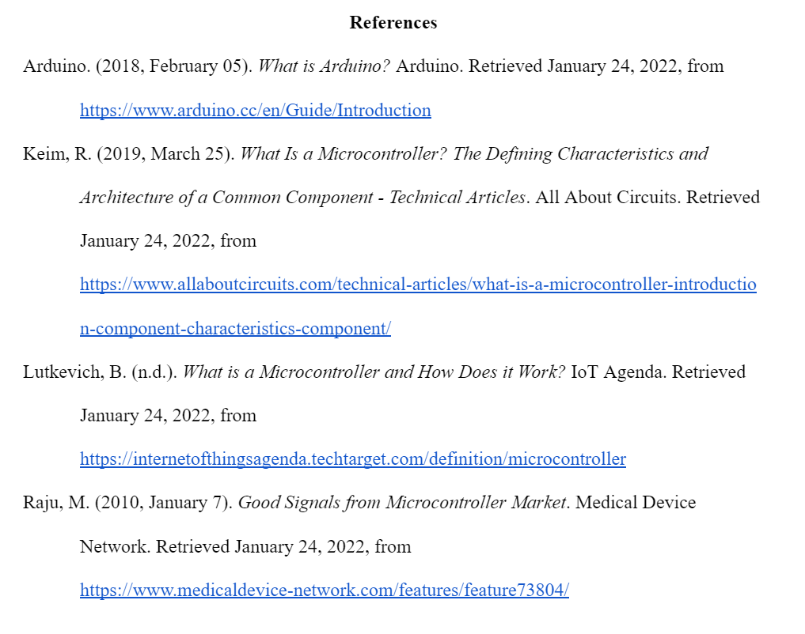

When you hear the word ‘computer’ what is it that comes to mind? A large powerful computational machine capable of complex operations? What about a small rectangle the size of your fingerprint? This tiny computer is called a microcontroller - the backbone of automation as we know it. Microcontrollers are integrated circuit devices consisting of a microprocessor, memory, and input/output (I/O) peripherals. Microcontrollers are optimized for embedded systems that demand processing functionality without diminishing agile interaction with digital, analog, or electromechanical components. Arduino microcontrollers have revolutionized the industry with their ease of use, low cost, open-source hardware and software, and Integrated Development Environment (IDE). Fundamentally, the operating principle behind Arduino boards is the reading of inputs from its sensors and returning outputs based on its programming. Programming an Arduino is simple and can be done in any high-level programming language such as C++, Python, or Java. Projects ranging from simple 8-bit boards to products for Internet of Things (IoT) applications, wearable, 3D printing, and embedded environments use Arduino boards. Its wide range of applications makes it a good option for any experience level and for children or beginners to learn how to program microcontrollers. Furthermore, developing countries have benefited from the cheap and effective Arduino boards that operate medical equipment such as blood pressure monitors, spirometers, pulse oximeters and heart rate monitors. Since they are beginner-friendly, developing countries with fewer educated professionals will not lose out on optimizing their use by everyday citizens. Almost every automated machine we use has a microcontroller within it. Arduino allows us to create customized projects that improve life for users by combining hardware and software. As it vacates its infancy, the future brightens for Arduino and its users.
